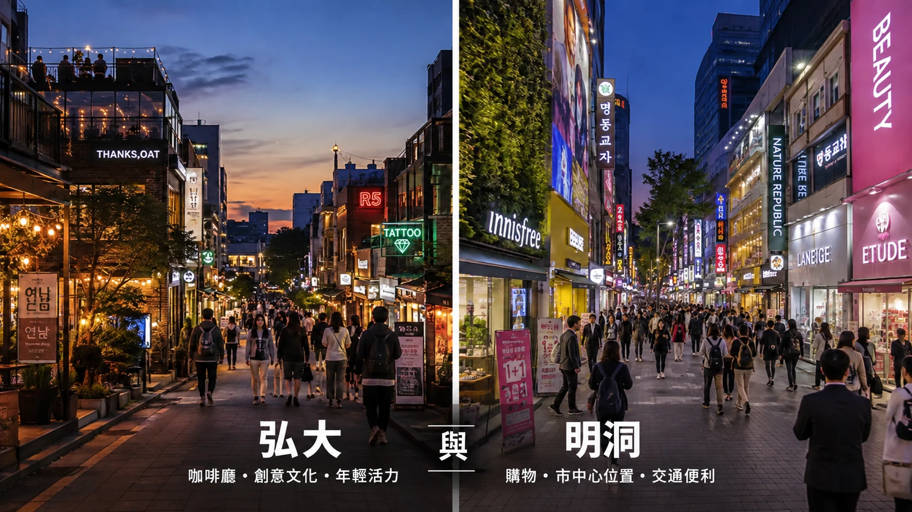

先看重點
第一次首爾旅行以宮殿、購物與市中心觀光為主，通常明洞更方便。咖啡廳、深夜活動與機場鐵路若是旅行的一部分，而非偶爾加碼，弘大就更適合作為住宿區。
帶大行李或淺眠的人，沒有哪一區一定更好。關鍵可能是某間飯店的實際路線與某一種房間，而不是弘大或明洞整體。
對許多初訪旅客，明洞是比較容易開始的選擇，因為市中心觀光、購物與日常用餐能簡單串起。咖啡廳、夜生活與直達 AREX 若重要到影響好幾天的行程，弘大就更合理。
住哪一區，都能去另一區玩。真正差別在於旅行期間，比較不想反覆走哪一段：白天從弘大往市中心觀光，還是在西側逛咖啡廳與夜生活後，深夜回明洞。
兩區都不是每項實際條件都占優勢。弘大飯店若從 AREX 月台過來拖行李不方便，可能失去機場交通優勢；明洞飯店若入口附近就有機場巴士站，反而可能出乎意料地輕鬆。
街區提供大方向，確切出口、飯店入口、房間朝向與最後一段步行，往往決定這個選擇實際上是否合用。
第一次首爾旅行以宮殿、購物與市中心觀光為主，通常明洞更方便。咖啡廳、深夜活動與機場鐵路若是旅行的一部分，而非偶爾加碼，弘大就更適合作為住宿區。
帶大行李或淺眠的人，沒有哪一區一定更好。關鍵可能是某間飯店的實際路線與某一種房間，而不是弘大或明洞整體。

| 優先需求 | 弘大 | 明洞 | 通常較方便 |
|---|---|---|---|
| 初訪便利性 | 不難安排，但反覆往市中心會多花時間。 | 以市中心景點為主的經典初訪行程，較容易安排。 | 明洞 |
| 機場交通 | 直達 AREX 普通列車是主要優勢。 | 飯店路線簡單時，機場巴士或地鐵都方便。 | 弘大 |
| 市中心觀光 | 搭地鐵不難，但往返時間較多。 | 較適合明洞、市廳、鍾路與宮殿行程。 | 明洞 |
| 購物 | 適合休閒服飾、小店與咖啡廳休息。 | 韓系美妝與旅客容易逛的零售選擇更有優勢。 | 明洞 |
| 咖啡廳 | 弘大與延南，很容易安排一個以咖啡廳為主的下午。 | 方便的咖啡廳不少，但通常是其他行程中的配角。 | 弘大 |
| 夜生活 | 酒吧、現場音樂與深夜餐飲，是街區的一部分。 | 夜生活只是偶爾安排，而非住宿主要目的時，更合適。 | 弘大 |
| 家庭旅行 | 選對房間、行程以首爾西部為主時，很合適。 | 市中心觀光、用餐與購物後回房休息，通常更方便。 | 明洞 |
| 安靜程度 | 很大程度取決於街道與房間朝向。 | 較不以夜生活為主，但繁忙道路與購物街仍可能吵。 | 明洞略有優勢 |
| 大行李 | 只有車站到飯店真的好走，AREX 才有幫助。 | 附近機場巴士站，可能勝過不好走的鐵路步行路線。 | 取決於飯店 |
通常明洞較合理。第一次來，市中心觀光、購物、市廳、鍾路、宮殿區與南山，往往比出發前想像中占去更多時間。住市中心不會省掉每次地鐵，但能減少每天一開始就往首爾中心移動的次數。
第一次旅行住弘大，仍完全可行。只有咖啡廳、深夜活動與首爾西部重要到讓一天結束回到這裡，比從經典景點附近開始更有幫助時，我才會改選弘大。
如果已有兩三晚要在弘大、延南聽現場音樂、去酒吧或附近吃晚餐，弘大就更適合住宿。白天往市中心不難，晚上結束後只需短程走回飯店，優勢會更明顯。
這時明洞的白天便利性，就可能沒那麼有價值。從弘大晚歸一次不難；好幾晚重複同一段路，才會改變兩者取捨。
沒有排大景點時，也想有地方慢慢逛，弘大更有吸引力。延南咖啡廳、休閒餐廳、購物與晚間街景，能讓沒特別計畫的下午或晚餐後都好安排，不必再跨城移動。
明洞比較有效率，但吸引力很大一部分來自便利性。若比起觀光站點，更在意中間停留時的街區感受，即使白天多一些交通時間，弘大仍可能更有收穫。
第一次帶孩子去首爾，我通常會偏向明洞。行程已集中在市中心時，觀光、吃飯、購物空檔與白天回房休息，更容易串在一起。
但實際飯店可能改變答案。寬敞的弘大房間、有電梯、AREX 路線簡單，可能比小間明洞客房、途中有樓梯或出口難走更合適。街區只是起點，房間與步行路線才有最後決定權。
這時比較兩間實際飯店，比爭論弘大或明洞更有用。弘大有直達 AREX，但弘大入口站很大，月台到飯店的路若不好走，可能抵消大部分優勢。
明洞飯店若在合適的機場巴士站旁，有時門到門移動更簡單。行李重時，電梯、路口、樓梯與最後幾百公尺，比交通圖上哪區勝出更重要。
最後比較的是更不想反覆走哪段路。住明洞，旅行中會幾次往西逛咖啡廳與夜生活；住弘大，則是白天往市中心觀光。
不是選住哪裡，就只能玩首爾哪一半。從任一住宿區都容易造訪另一區；你是在決定哪個方向成為每日常態，哪段路只想偶爾走。
住弘大，回到街區不代表晚上就結束了。晚點吃飯、進咖啡廳，或晚餐後繼續散步，都不必再安排跨城移動。弘大入口站也有 AREX 普通列車與 2 號線。

弘大入口站比飯店地圖上看起來大。飯店看似緊鄰車站，從 AREX 月台出來仍可能要走長廊、換樓層、等電梯，最後再穿過繁忙街道。帶行李抵達或離開時，差異最明顯。
弘大各街區也不相同。中心街道深夜仍熱鬧，延南更偏咖啡廳氣氛，合井則可能在不遠處提供較安靜的選擇。離最熱鬧街道幾分鐘的房間，能保留多數弘大優勢，也明顯更好睡。


想知道在弘大的一天可以怎麼過？
明洞讓許多初訪行程更簡單，市中心觀光一天後，就能在飯店附近購物或吃晚餐。從這一帶較容易串起市廳、南大門、鍾路與宮殿路線，但「居中」不代表每個景點都能輕鬆走到。

明洞內部的飯店位置，比區名顯示的更重要。有些從明洞站較方便，有些靠乙支路 1 街站；看似地下捷徑的路線，帶行李時可能有樓梯、人潮，或不方便的電梯繞行。
明洞較不像弘大以夜生活為主，但不保證安靜。主要購物街、送貨與大馬路仍會影響房間。真正優勢是彈性：初訪行程當天改變時，不必每個新計畫都變成長距離跨城移動。

弘大的機場鐵路優勢更明確，因為弘大入口站在 AREX 普通列車路線上。月台到飯店確實容易走時，優勢最大。帶大行李箱，站內步行與出站後最後幾分鐘，可能和少轉一次車同樣重要。
明洞沒有一條機場路線適合所有飯店。有些飯店入口附近有機場巴士，比拖行李穿越大型鐵路車站更輕鬆；其他飯店則搭地鐵或計程車更合適。這時，確切地址可能比區域層級的比較結果重要。
深夜抵達也會改變判斷。班機延誤可能讓原本打算搭的火車或巴士無法使用；在首爾晚歸，也可能把簡單的地鐵路線變成計程車行程。這兩種情況發生前，先存好飯店名稱與韓文地址很有用。
離開當天是另一段獨立路程。退房後行李寄放、最早可搭的機場交通，以及計程車實際上車點，都可能改變旅程快結束時哪間飯店更方便。
本頁含聯盟連結。
房價會依日期、房型、入住人數與取消政策明顯變動。預訂前比較最終價格與條件。
先想要簡化哪段移動。Holiday Inn Express 以車站動線為優先；Amanti 多走一些路，但遠離最密集的站邊飯店群；9 Brick、L7 與 RYSE 則讓更多弘大活動就在飯店附近。最後仍應看實際房間、步行路線與所選日期的房價。
跨平台比較相同房型與取消條款。房間、早餐或取消條件不同，較低的標示價格就不太有比較意義。
抵達與離開當天方便，是考慮 Holiday Inn Express Seoul Hongdae 的主要理由。IHG 標示飯店約在弘大入口站 5 號出口一分鐘處，與 AK Plaza 同棟，車站有 AREX 普通列車。住客包含免費早餐，也讓一早出門更簡單。
要留意的在地下，而不是地圖上。5 號出口離飯店近，但 AREX 月台仍在大型車站內；帶重行李應評估月台到出口的路，不只看宣傳的出口步行時間。
多走的那段路，正是 Amanti Hotel Seoul 的取捨。飯店官方指引約在弘大入口站 1 號出口 450 公尺處：先走約 150 公尺到弘大入口路口，再往飯店走 300 公尺。拖行李或下雨時距離會有感，但也遠離緊密的站邊飯店群。只有這項交換符合旅行需求時，再選它。
如果好幾晚都會在弘大中心結束行程，9 Brick 的優勢很直接：弘益路 5 街的地址，讓飯店位於你可能反覆回來用餐、購物與夜間活動的區域。淺眠，或需常拖大行李往返車站時，同樣的中心位置就值得更仔細評估。
L7 Hongdae 值得列入候選，更明確的理由是房型配置，而非籠統的「更精緻」。Lotte 列有 24.8㎡ 標準客房，以及三人房與家庭雙床配置，朋友或小家庭可以比較實際睡眠安排，不必直接訂兩間房。
位於楊花路，弘大活動仍在附近；但房型配置有價值的前提，是所選日期的最終房價合理。比較真正會訂的房間，不要只拿 L7 名稱，對上別處較低的標示價格。
在這幾間弘大飯店中，RYSE 是飯店本身也值得占一部分行程的選擇。Marriott 列有自家餐廳、頂樓 Side Note Club、健身設施，以及重視設計的客房與套房，從街區回來後，還有更多飯店內容可使用。
這也讓你更容易判斷是否不需要它。如果早餐後就出門，回來只睡覺，可能是在為旅行中幾乎用不到的部分付錢。
明洞不是單一飯店區。L7 Myeongdong 與 Hotel Skypark III 在明洞站一側；The Grand Lotte Seoul 靠北、接近乙支路 1 街站；Nine Tree Myeongdong II 實際更靠近乙支路 3 街站；Le Méridien 則位於明洞購物區內。
這些差異會改變地鐵線、機場路線與每天重複的步行量。先選符合行程的明洞哪一側，再比較房價。
如果明洞站會是行程的主要出發點，L7 Myeongdong 能讓選擇更簡單。飯店在退溪路、靠車站的這一側，Lotte 也提供館內 24 小時住客休息室。預期購物或觀光之間回飯店時，這樣的組合很實用；多數日子若往市廳、鍾路或乙支路方向開始，優勢就沒那麼重要。
比較 The Grand Lotte Seoul 與明洞站附近飯店前，先把地圖往北看。飯店位於乙支路 30 號、靠近乙支路 1 街站，因此市廳、光化門、鍾路與明洞購物，更容易串在同一趟住宿行程。
如果預期每天以明洞站為定位基準，或想出門就是徒步購物街，它就較不符合需求。舊地圖與訂房資料可能仍顯示前名 Lotte Hotel Seoul。
有一項實際細節，可能比 Le Méridien 名稱更重要：Marriott 列明下午 4:00 入住。飯店位於明洞核心的明洞 8na 街 38 號，但一早抵達首爾的旅客，不能把第一天下午當成與可更早進房的飯店完全相同。
如果想住明洞內部，也願意把更多預算分配給飯店本身，再選它。更在意最簡單的行李動線或最低房價時，為品牌付錢前，先比較車站一側的替代選擇。
雖然名稱有明洞，把 Nine Tree by Parnas Seoul Myeongdong II 視為乙支路 3 街站飯店，更容易理解位置。Parnas 標示距 11 號出口約 254 公尺，步行約四分鐘。若常在市中心移動，2、3 號線是實際的每日優勢；但若只是想出門就到明洞站或主要購物街，就不該因此選它。
在這組飯店中，Hotel Skypark Myeongdong III 是直接以車站便利性見長的選擇。飯店表示明洞站 9 號出口就在正前方，附近有機場巴士站，也列有三人與四人房。對初訪、小團體，或想減少拖行李走街道的人，是具體優勢。
預訂理由是路線與房間配置。如果想讓飯店本身成為旅行中較大的一部分，決定前再比較服務更完整的選擇。
弘大有吵雜街道，也有安靜街區與背向主要活動區的房間。噪音比街區名稱所能說明的更具體。
市中心觀光與購物符合行程時，明洞才有優勢。名稱本身，不會讓它成為以首爾西部或南部為主的旅行中最佳住宿區。
直達火車或巴士只是路程的一部分。長站內通道、樓梯、路口與最後一段步行，都可能改變拖行李時哪邊真的更簡單。
首爾大型車站的出口，可能相距比想像中遠。飯店看似靠近車站中心，日常路線仍可能不好走。
同一街區裡，臨大馬路與臨小巷的房間，夜晚可能完全不同。近期針對特定房間的評論更有用。
一早抵達或搭晚班機，可能有幾小時需要寄放行李。這些日子的寄放與入住流程，也會成為位置選擇的一部分。
房間無法舒服容納住客、床鋪與行李，飯店再居中也不方便。
明洞位置好，但宮殿、鍾路、南山與首爾其他地方仍需不同路程。位置居中能減少麻煩，不代表不需要交通。
弘大吸引很多年輕遊客，但咖啡廳、餐廳、公園與較安靜的周邊街道，適合的旅客範圍廣得多。行程比年齡本身重要。
較低的顯示價格，可能對應不同房型、取消政策或早餐條件。同樣住宿、相同條件，才有比較意義。
第一次以市中心觀光與購物為主，通常明洞更容易安排。如果咖啡廳、夜生活與直達 AREX 重要到會影響好幾天的行程，弘大就更適合作為住宿區。
弘大的鐵路優勢更明確，因為弘大入口站有 AREX 普通列車。不過，機場巴士若停在飯店附近，或弘大車站到飯店的路線不適合拖行李，明洞仍可能更輕鬆。
明洞更適合韓系美妝與旅客容易逛的商店，尤其飯店近、能隨時放回購物袋時。弘大則比較適合休閒服飾、小店，以及穿插咖啡廳的購物行程。
如果酒吧、現場音樂與深夜用餐是常態行程，弘大明顯更合適。夜生活只是偶爾安排、白天觀光更重要時，明洞較好。
就街區整體而言，明洞較不以夜生活為主，稍微容易選擇，但兩區都不保證安靜。街道、是否臨路與房間朝向，比區名更重要。
結合市中心觀光、用餐與購物的家庭，通常明洞更方便。如果 AREX 交通或首爾西部行程更重要，弘大也很合適。
沒有哪一區一定勝出。從 AREX 月台到飯店路線簡單時，弘大很方便；明洞飯店若就在機場巴士站旁，可能比長距離搭車再步行更輕鬆。
明洞明顯以旅客為主，帶來人潮，也帶來方便購物、多語服務與大量飯店選擇。你覺得這是方便，還是少了生活感，取決於想從街區得到什麼。
對多數初訪旅客，明洞是比較容易的答案。市中心觀光、購物與每日安排相對簡單。如果咖啡廳、夜生活與機場鐵路重要到住別處會覺得可惜，弘大就更適合。
最後決定仍可能因實際飯店而改變。明洞飯店若車站路線不好走，或弘大房間正好在最繁忙的夜生活街道上方，都可能比區域比較看起來更不方便。區域方向大致確定後，再比較實際考慮中的兩間飯店路線。